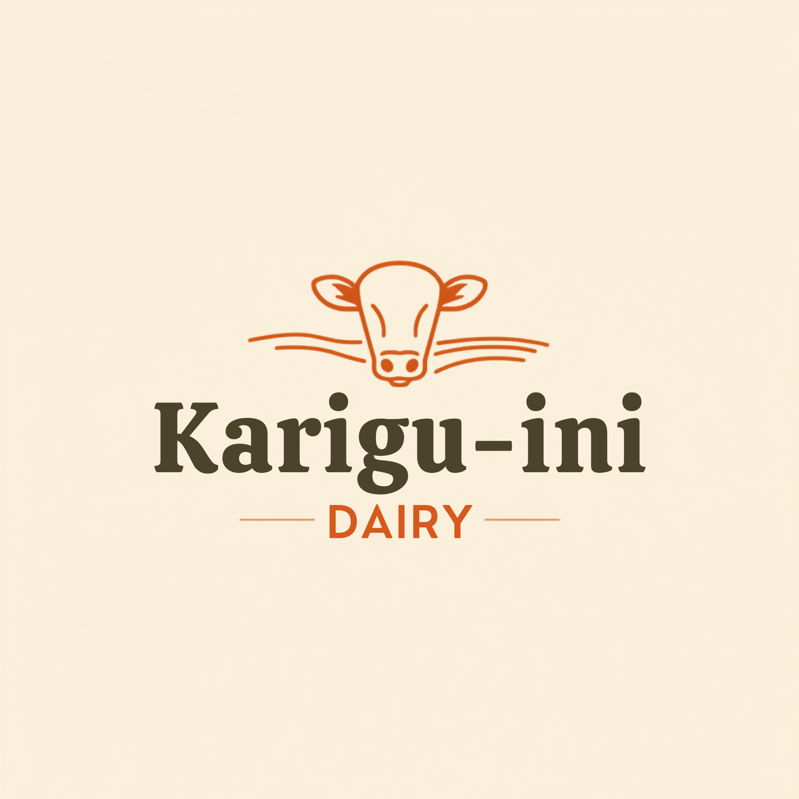

Healthy Dairy Cows

Healthy Dairy Cow

Grazing Dairy Cow

Quality Dairy Breed

Fresh Milk • Fair Prices • Trusted Farmers
Karigu-ini Dairy Self Help Group empowers over 70 dairy farmers across Nyeri County through fair milk pricing, reliable milk collection and sustainable agricultural growth.
Proudly serving Nyeri County since 2005
Registered Farmers
Years of Service
Milk Collection Sessions Daily
Commitment to Quality
Karigu-ini Dairy Self Help Group was established in 2005 in Karigu-ini Village, Wamagana Ward, Tetu Constituency, Nyeri County.
Our mission is to empower dairy farmers by providing a dependable milk collection centre where members receive fair prices, reliable service and continuous support.
Today the group serves more than seventy members and continues to strengthen dairy farming through transparency, professionalism and community development.
6:00 AM – 7:00 AM
5:00 PM – 6:30 PM
We collect milk daily from our farmers and provide a dependable market that helps reduce waste and increase household income.
We maintain high standards of hygiene and quality to supply fresh milk to consumers and dairy processors.
Through collaboration and continuous support, we help farmers improve productivity and strengthen their dairy enterprises.
We are committed to ensuring every farmer receives fair and competitive prices for their milk, helping improve household income.
For more than two decades, Karigu-ini Dairy has served farmers with honesty, accountability and reliable milk collection services.
We encourage quality dairy farming practices that improve milk quality, animal health and long-term sustainability.
Our leadership team is dedicated to transparent management and continuous improvement of our dairy cooperative.
We believe strong communities are built through successful farmers and sustainable agriculture.
Every litre of milk is handled with care while maintaining high hygiene and quality standards.
Leads the organization by overseeing management, coordinating members, making strategic decisions and ensuring the continued growth of the Karigu-ini Dairy Self Help Group.
Dedicated committee members assist in financial management, milk collection, member coordination and day-to-day operations.
Healthy Dairy Cow
Grazing Dairy Cow
Quality Dairy Breed
Karigu-ini Dairy Self Help Group is located in Karigu-ini Village, Wamagana Ward, Tetu Constituency, Nyeri County, Kenya.
Your feedback helps us improve our services. All submitted reviews are verified before being published.
"The staff are friendly and payments are always fair. I highly recommend Karigu-ini Dairy."
— Local Farmer"Joining this dairy group has helped me grow my dairy farming business."
— Dairy MemberInterested in supplying milk, partnering with us, or learning more? We'd love to hear from you.
📍 Karigu-ini Village, Wamagana Ward, Nyeri County
📞 0722 461 037
📧 petermathenge0@gmail.com